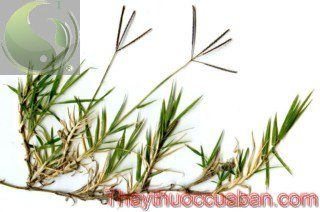

Tên khác
Tên thường dùng: Cỏ gà, Cỏ chỉ, cỏ ống, cỏ Bermuda (Mỹ), cỏ giường (green couch- Australia), cỏ "dhoub" (Bangladesh), cỏ Bahama (Nam Phi), hierba-fina (Cuba),Peru gọi là gramilla blanca
Tên khoa học: - Cynodon dactylon (L.) Pers
Họ khoa học: thuộc họ Lúa - Poaceae.
Cây cỏ gà
(Mô tả, hình ảnh cây cỏ gà, phân bố, thu hái, thành phần hóa học, tác dụng dược lý...)

Mô tả:
Cỏ gà là cây thuốc nam quý, Cỏ sống dai nhờ thân rễ ngắn. Thân rễ bò dài ở gốc, thẳng đứng ở ngọn, cứng, có từ 8 đến 40 cọng, có khi cao tới 90 cm. Cỏ gà bò chằng chịt vào nhau thành thảm cỏ dày đặc. Lá phẳng hình dài hẹp, nhọn đầu, màu vàng lục, mềm, nhẵn hoặc có lông, mép hơi ráp. Lá có thể thay đổi màu sắc từ xanh đậm sang xanh nhạt, trắng khi thời tiết biến đổi. Cụm hoa thường dài từ 3 đến 6 cm gồm từ 3 đến 7 bông con (hiếm gặp hơn là 2 bông) dài khoảng 2-3 mm xếp hình ngón, đơn, mảnh. Các ngón hoa thường tạo thành một vòng nhưng cá biệt có thể thành 2 vòng với 10 cụm hoa. Quả thóc, hình thoi thường dẹt, không có rãnh.
Bộ phận dùng: Thân rễ hoặc toàn cây - Rhizoma et Herba Cynodonis.
Nơi sống và thu hái:
Cây phổ biến khắp thế giới.
Ở nước ta cây mọc hoang khắp nơi, thường gặp nơi ẩm thấp, trong các vườn, hay các triền đê.
Thu hái, chế biến:
Ðào cây, cắt lấy thân rễ, rửa sạch đất cát, phơi hay sấy khô.
Thành phần hoá học:
Thân rễ Cỏ gà chứa một chất kết tinh (cynodin) có thể là asparagin, còn có tinh bột, đường, các muối kali. Trong lá có vitamin C (64mg/100g lá tươi).
Tác dụng dược lý:
Cỏ gà, cỏ chỉ có tác dụng chữa:
- Đau ngực
- Làm bớt đau
- Chất làm se thắt
- Cầm máu
- Nhuận trường
Vị thuốc cỏ gà
(Công dụng, liều dùng, tính vị, quy kinh...)
Tính vị, tác dụng:
Cỏ gà có vị ngọt, hơi đắng, tính mát; có tác dụng lợi tiểu, giải độc, lọc máu, giải nhiệt, giải khát, tiêu đờm.
Công dụng, chỉ định và phối hợp:
Các bệnh nhiễm trùng và sốt rét;
Các trường hợp rối loạn tiết niệu, viêm thận và bàng quang, vàng da, sỏi thận, sỏi gan, sỏi mật;
Thấp khớp, thống phong:
Phụ nữ kinh nguyệt không đều
Trẻ em sốt cao, tiểu ít hay bí đái;
Viêm mô tế bào
Rắn cắn.
Liều dùng:
Dùng toàn cây hay thân rễ sắc uống; lấy 20g cho vào 1 lít nước sắc kỹ, ngày uống 2 chén, liên tục trong 3 – 4 ngày.
Nếu hãm uống, dùng 20g rễ hãm 1 phút trong 1 lít nước đun sôi, loại bỏ nước này, bóc vỏ thân rễ đi rồi lại cho vào 1 lít nước khác đun sôi trong 10 phút, có thể thêm 1 nắm Cam thảo. 1 nắm Bạc hà, 1 quả Chanh, mỗi ngày uống 2 chén. Có thể dùng dịch tươi.
Ðể trị rắn cắn, dùng thân rễ nhai nuốt nước, lấy bã đắp vào chỗ bị cắn
Ứng dụng lâm sàng của cỏ gà
- Thuốc lợi tiểu:
Cỏ chỉ 20g, sắc trong 1.000ml chia nước này uống nhiều lần trong ngày. Có thể nấu thành dạng cao lỏng pha trong nước với tỷ lệ 20% (tức 20g trong 1.000ml nước.
Hỗ trợ chữa bệnh trĩ:
Hằng ngày lấy cỏ chỉ rửa sạch ép lấy nước cốt uống, ngày 2 lần, mỗi lần 12ml.
Chữa tiểu đường (đái tháo đường):
Dùng cỏ gà 50g, đường phèn; sắc nước uống thay trà trong ngày.
Chữa sỏi tiết niệu:
Dùng cỏ gà 30-50g; sắc nước uống thay trà trong ngày. Có thể phối hợp thêm với thòng bong (bòng bong), kim tiền thảo, xa tiền thảo (mã đề) - mỗi vị 10g; cùng sắc uống.
Chữa cảm nóng, ỉa chảy, nôn mửa:
Dùng cỏ gà 50-60g, đường phèn; sắc nước uống thay trà trong ngày.
Tham khảo
Một số nghiên cứu về cây cỏ gà
Chống bệnh tiểu đường Antidiabétique / hạ mỡ trong máu hypolipidémiants :
▪ Nghiên cứu trích xuất trong cây cỏ chỉ chiendent đã khử chất béo trên chuột bị bệnh tiểu đường gây ra bởi streptozotocine cho thấy một tiềm năng mạnh chống bệnh tiểu đường và một chiều hướng tốt cho giảm chất béo trong máu hypolipémiant, với một sự giảm đường máu glycémie, giảm tĩ lượng của cholestérol toàn phần, của LDL cholestérol xấu và đường mỡ triglycérides và một sự gia tăng tĩ lượng HDL tức cholestérol tốt.
▪ Nghiên cứu dung dịch trích trong nước của Cynodon dactylon cho thấy một tiềm năng mạnh chống tiểu đường với hiệu ứng đáng kể :
- hạ đường máu hypoglycémiants,
- và hạ chất béo trong máu hypolipémiants.
● Yếu tố kháng khuẩn agents antimicrobiens :Thẩm tra hoạt động kháng khuẩn của dung dịch trích của cỏ chỉ Cynodon dactylon. Những kết quả cho thấy trích xuất của cỏ chỉ Cynodon dactylon có hiệu quả chống lại những giống vi khuẩn Pseudomonias.
● Bảo vệ chống ung bướu chondroprotecteur / chống viêm Anti-inflammatoire :
Nghiên cứu cho thấy một hiệu ứng bảo vệ ung bướu chondro-protection. Hiệu quả chống viêm có thể là do sự ổn định của màng lysosomale.
● Lợi tiểu diurétique :
Nghiên cứu trên dung dịch trích của rễ trên thân cây cỏ chỉ Cynodon datylon cho thấy một hoạt động lợi tiểu diurétique, hiển thị một sự gia tăng sản lượng của chlorure nước tiểu nhung không phải potassium ở tất cả mức liều dùng.
● Bảo vệ tim cardioprotecteur / inotrope chi phối sự co bóp cơ tim :
Nghiên cứu cho thấy Cynodon dactylon gây ra một hiệu quả mạnh bảo vệ trên sự suy tim bên phải, một phần nhờ vào một hành động chi phối tích cực sự co bóp cơ tim và cải thiện chức năng của tim.
● Hóa trị ngừa bệnh chimiopréventif / chống tăng sinh antiproliférative :
Trong nghiên cứu của carcinogenesis ( carcinogenesis : nghiên cứu tiến trình tạo ra bệnh ung thư, quá trình theo đó mà tế bào bình thường được chuyển đổi thành tế bào ung thư, nó được đặc trưng bởi sự tiến triển của những thay đổi ở cấp độ tế bào và di truyền cuối cùng lập trình lại một tế bào trải qua sự phân cắt tế bào không kiểm soát được do đó mà tạo thành khối u ác tính ) của trực tràng thí nghiệm ở chuột, Cỏ chỉ Cynodon dactylon cho thấy là chống lại sự tăng sinh và chống sự oxy hóa và dẫn đến cái chết tế bào bởi lập trình tự chết apoptosis.
Sự chữa trị với trích xuất méthanolique làm tăng mực độ phân hóa tố chống oxy hóa antioxydantes và giảm số lượng hầm tế bào loạn sản cryptes dysplasiques.
● Chống kết thạch ở thận Anti-Nephrolithiatic :
Nghiên cứu cho thấy kết luận rằng dung diịch trích của cỏ chỉ Cynodon dactylon có một hiệu quả lợi ích trong việc phòng ngừa và loại bỏ những kết thạch oxalate de calcium lắng đọng trong thận, đồng thời cung cấp một giải thích việc sử dụng truyền thống trong chữa trị bệnh sạn thận calculs rénaux.
● Chống loét Anti -Ulcère:
Nghiên cứu mang lại những alcaloïdes và những chất đạm protéines. Dung dịch trích trong alcoolique của cỏ chỉ cho thấy một hoạt động chống loét anti-ulcéreuse đáng kể, được so sánh với thuốc ranitidine, hiệu quả này có thể do sự hiện diện của những flavonoïdes.
● Hiệu quả chữa bệnh tổn thương ở gan gây ra bởi STZ Streptozotocine: Nghiên cứu đánh giá vai trò của trích xuất trong éthanolique của cỏ chỉ Cynodon datylon chống lại các biến chứng gan ở những mô hình STZ một sự giảm đáng kể của SGOT, SGPT, Alkaline phosphatase, của créatinine và của đường trong nước tiểu. Một DL50 ( dose létale médiane liều trung bình gây tử vong ) lớn xác nhận một tỷ xuất lợi nhuận an toàn.
● Điều hòa miễn nhiễm immunomodulateur:
Trong một nghiên cứu trên chuột được tiêm chủng với hồng huyết cầu trừu ( moutons RBC Red Blood Cells ), phần chất đạm của cỏ chỉ Cynodon dactylon tăng cường phản ứng kháng thể anticorps dịch thể với kháng nguyên antigène và một tiềm năng miễn nhiễm tế bào đáng kể.
Ứng dụng:
Cả hai loại cỏ chỉ chiendents cỏ chỉ đều có cùng một đặc tính trị liệu như nhau nhưng người ta thường chuộng loại gros chiendent cỏ chỉ lớn Cynodon dactylo, có căn hành lớn, tươi tốt, hay sấy khô sau khi rửa sạch bảo quản nơi mát và thoáng ( những loại trùng thường dòm ngó ). Ở thôn quê, thường chỉ cần một cuốc xuống đất là có nhiều căn hành để sử dụng nên vấn đề tồn trữ bào quản không đặt ra.
Cỏ chỉ Cynodon là một chất :
- lợi tiểu diurétique,
- mát rafraîchissant,
- chất làm se thắt émollient :
▪ Ngâm trong nước đun sôi :
- tuyệt hảo cho yếu tố thoát nước,
- là một thức uống rất tốt khỏe mạnh.
- làm hết khát cho những bệnh nhân,
- đồng thời thúc đẩy thận làm việc tốt và bình thường đúng
- là một yếu tố tốt cải tiến trong những bệnh sốt.
( trong bệnh cúm grippe, người ta có thể kết hợp với
bourrache Bourrache ou Bourrache officinale (Borago
officinalis L.) và hoa hướng dương tournesol :
▪ một muỗng canh nguyên liệu trộn lẫn 2 cây trên ngâm trong 10 phút trong một tách nước đun sôi của cây cỏ chỉ chiendent, thêm mật ong, uống thật nóng, 3 tách / ngày .
Cỏ chỉ là cây thuốc nam, vị thuốc nam quý. Khách hàng có thể tìm mua vị thuốc này tại địa phương.
Nơi mua bán vị thuốc Cỏ gà đạt chất lượng ở đâu?
Trước thực trạng thuốc đông dược kém chất lượng, nguồn gốc không rõ ràng,... xuất hiện tràn lan trên thị trường, làm ảnh hưởng tới hiệu quả điều trị cũng như ảnh hưởng tới sức khỏe của bệnh nhân. Việc lựa chọn những địa chỉ uy tín để mua thuốc đông dược là rất quan trọng và cần thiết. Vậy khách hàng có thể mua vị thuốc Cỏ gà ở đâu?
Cỏ gà là vị thuốc nam quý, được sử dụng rộng rãi trong YHCT. Hiện tại hầu hết các cửa hàng thuốc đông dược, phòng khám đông y, phòng chẩn trị YHCT... đều có bán vị thuốc này. Tuy nhiên người mua nên chọn những địa chỉ có uy tín, đảm bảo chất lượng, có giấy phép hoạt động để mua được vị thuốc đạt chất lượng.
Với mong muốn bệnh nhân được sử dụng những loại dược liệu đúng, chất lượng tốt, phòng khám Đông y Nguyễn Hữu Toàn không chỉ là đia chỉ khám chữa bệnh tin cậy, uy tín chất lượng mà còn cung cấp cho khách hàng những vị thuốc đông y (thuốc nam, thuốc bắc) đúng, chuẩn, đạt chuẩn chất lượng. Các vị thuốc có trong tiêu chuẩn Dược điển Việt Nam đều được nghành y tế kiểm nghiệm đạt chất lượng tiêu chuẩn.
Vị thuốc Cỏ gà được bán tại Phòng khám là thuốc đã được bào chế theo Tiêu chuẩn NHT.
Giá bán vị thuốc Cỏ gà tại Phòng khám Đông y Nguyễn Hữu Toàn: Gọi 18006834 để biết chi tiết
Tùy theo thời điểm giá bán có thể thay đổi.
+ Khách hàng có thể mua trực tiếp tại địa chỉ phòng khám: Cơ sở 1: Số 481 lô 22 Lê Hồng Phong, Phường Gia Viên, Thành phố Hải Phòng
+ Mua trực tuyến: Thuốc được chuyển qua đường bưu điện. Khi nhận được thuốc khách hàng thanh toán tiền COD.
Tag: cay co ga, vi thuoc co ga, cong dung co ga, Hinh anh cay co ga, Tac dung co ga, Thuoc nam
Thaythuoccuaban.com Tổng hợp
*************************